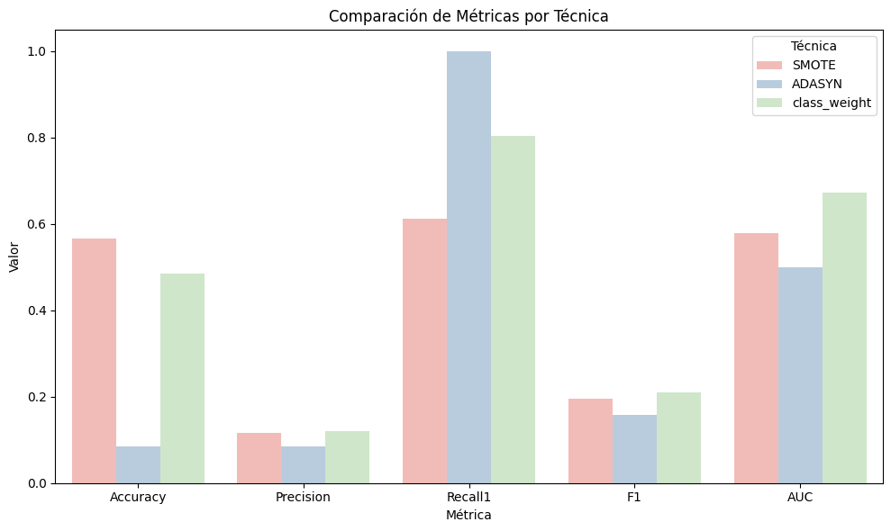
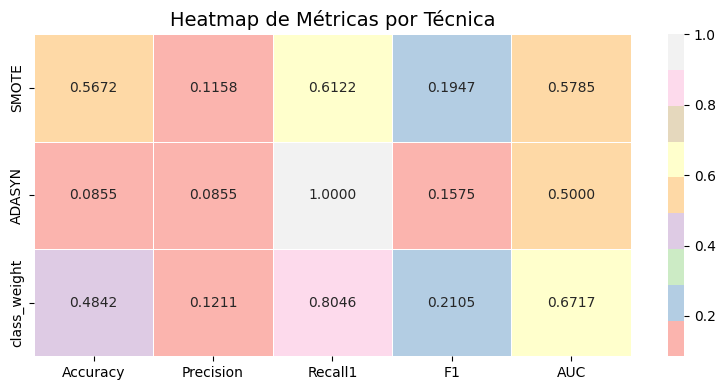
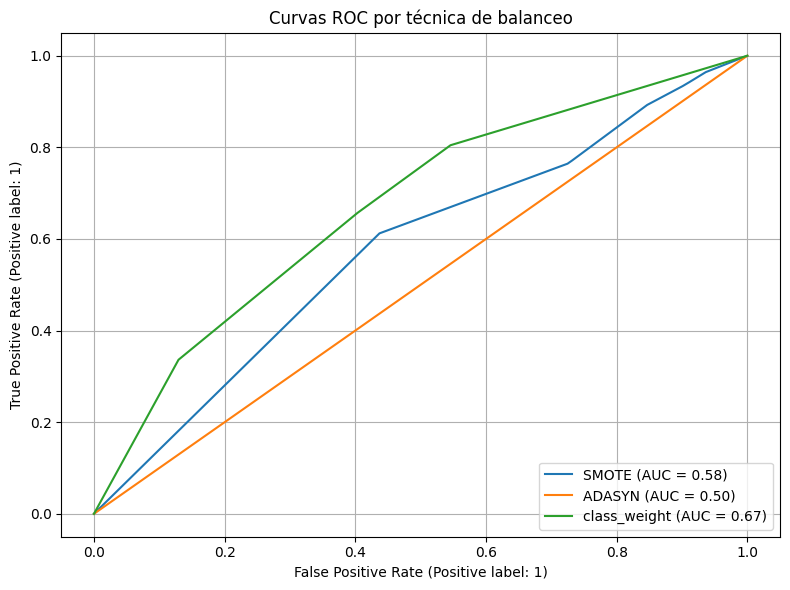
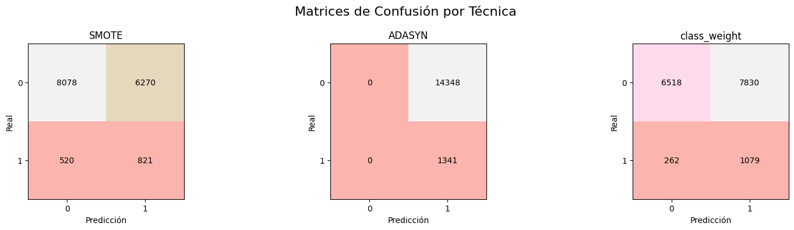
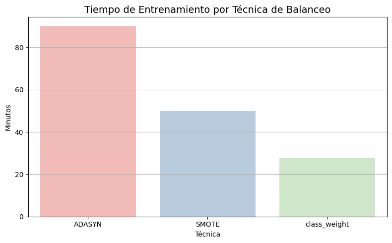
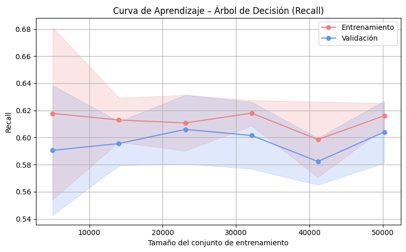
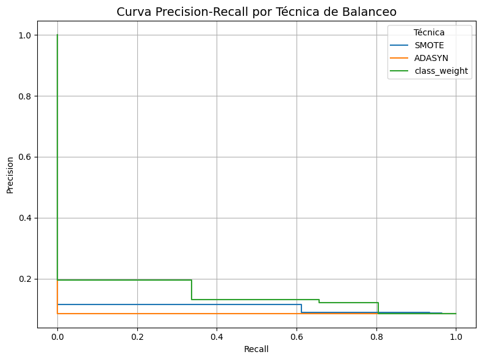
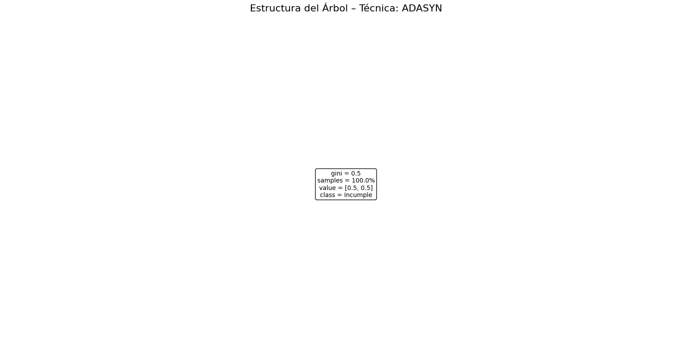
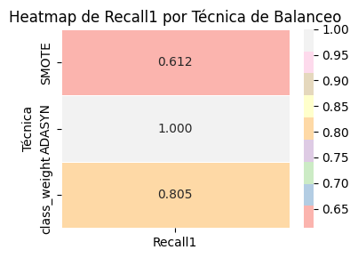

49. Árbol de Decisión#
50. 1. Importación de librerías#
import time
import pandas as pd
import numpy as np
import matplotlib.pyplot as plt
import seaborn as sns
import joblib
import os
from sklearn.model_selection import train_test_split, GridSearchCV
from sklearn.preprocessing import StandardScaler, OneHotEncoder
from sklearn.compose import ColumnTransformer
from sklearn.pipeline import Pipeline
from imblearn.pipeline import Pipeline as ImbPipeline
from imblearn.over_sampling import SMOTE, ADASYN
from sklearn.tree import DecisionTreeClassifier
from sklearn.metrics import (
accuracy_score, precision_score, recall_score, f1_score, roc_auc_score,
confusion_matrix, ConfusionMatrixDisplay, RocCurveDisplay
)
51. 2. Cargar y dividir datos#
df = pd.read_csv(r"C:\Users\DELL\Desktop\Aprendizaje_de_Maquina\credit_risk_the_end.csv")
X = df.drop(columns=["incumplimiento_credito"])
y = df["incumplimiento_credito"]
X_train, X_test, y_train, y_test = train_test_split(
X, y, test_size=0.2, stratify=y, random_state=42
)
52. 3. Preprocesamiento (numéricas + categóricas)#
cat_cols = X.select_dtypes(include="object").columns.tolist()
num_cols = X.select_dtypes(include=["int64", "float64"]).columns.tolist()
preprocessor = ColumnTransformer([
("num", StandardScaler(), num_cols),
("cat", OneHotEncoder(handle_unknown="ignore"), cat_cols)
])
53. 4. Crear Pipelines con distintas técnicas#
param_grid = {
'clf__criterion': ["gini", "entropy", "log_loss"], # tipo de función de impureza
'clf__splitter': ["best", "random"], # estrategia de división
'clf__max_depth': [3, 5, 10, 20, None], # profundidad máxima
'clf__min_samples_split': [2, 5, 10, 20], # min muestras para dividir nodo
'clf__min_samples_leaf': [1, 2, 4, 10], # min muestras por hoja
'clf__max_features': [None, "sqrt", "log2"], # número máx de features por split
'clf__ccp_alpha': [0.0, 0.01, 0.05] # complejidad de poda (pruning)
}
pipelines = {
"SMOTE": ImbPipeline([
("pre", preprocessor),
("smote", SMOTE(random_state=42)),
("clf", DecisionTreeClassifier(random_state=42))
]),
"ADASYN": ImbPipeline([
("pre", preprocessor),
("adasyn", ADASYN(random_state=42)),
("clf", DecisionTreeClassifier(random_state=42))
]),
"class_weight": Pipeline([
("pre", preprocessor),
("clf", DecisionTreeClassifier(class_weight="balanced", random_state=42))
])
}
54. 5. Entrenamiento y Evaluación con GridSearchCV#
from sklearn.model_selection import GridSearchCV
import os
# 1. Definir grilla de hiperparámetros (igual para todos)
param_grid = {
'clf__criterion': ["gini", "entropy", "log_loss"], # tipo de función de impureza
'clf__splitter': ["best", "random"], # estrategia de división
'clf__max_depth': [3, 5, 10, 20, None], # profundidad máxima
'clf__min_samples_split': [2, 5, 10, 20], # min muestras para dividir nodo
'clf__min_samples_leaf': [1, 2, 4, 10], # min muestras por hoja
'clf__max_features': [None, "sqrt", "log2"], # número máx de features por split
'clf__ccp_alpha': [0.0, 0.01, 0.05] # complejidad de poda (pruning)
}
# 2. Crear carpeta para guardar modelos si no existe
os.makedirs("modelos_arbol_balanceados", exist_ok=True)
# 3. Entrenamiento con GridSearchCV y evaluación
results = {}
for name, pipe in pipelines.items():
print(f"\n Entrenando con GridSearchCV: {name}")
# Definir GridSearch para cada pipeline
grid = GridSearchCV(
estimator=pipe,
param_grid=param_grid,
scoring="recall", # Muy importante en problemas desbalanceados
cv=5,
n_jobs=14,
verbose=1
)
# Medir tiempo de entrenamiento
t0 = time.time()
grid.fit(X_train, y_train)
fit_time = (time.time() - t0) / 60
# Obtener mejor pipeline y hacer predicciones
best_model = grid.best_estimator_
y_prob = best_model.predict_proba(X_test)[:, 1]
y_pred = (y_prob >= 0.5).astype(int)
# Evaluar métricas
results[name] = {
"model": best_model,
"grid": grid,
"y_prob": y_prob,
"y_pred": y_pred,
"fit_minutes": fit_time,
"Accuracy": accuracy_score(y_test, y_pred),
"Precision": precision_score(y_test, y_pred, zero_division=0),
"Recall1": recall_score(y_test, y_pred, zero_division=0),
"F1": f1_score(y_test, y_pred, zero_division=0),
"AUC": roc_auc_score(y_test, y_prob)
}
# Guardar mejor modelo
joblib.dump(best_model, f"modelos_arbol_balanceados/arbol_{name}.joblib")
Entrenando con GridSearchCV: SMOTE
Fitting 5 folds for each of 4320 candidates, totalling 21600 fits
Entrenando con GridSearchCV: ADASYN
Fitting 5 folds for each of 4320 candidates, totalling 21600 fits
Entrenando con GridSearchCV: class_weight
Fitting 5 folds for each of 4320 candidates, totalling 21600 fits
55. 6. Tabla comparativa de métricas#
from matplotlib.colors import LinearSegmentedColormap
# Crear un colormap basado en Pastel1
pastel1_colors = sns.color_palette("Pastel1", 9)
pastel1_cmap = LinearSegmentedColormap.from_list("Pastel1", pastel1_colors.as_hex())
# Crear tabla de métricas
df_metrics = pd.DataFrame(results).T[
["Accuracy", "Precision", "Recall1", "F1", "AUC", "fit_minutes"]
]
# Aplicar estilo con colores Pastel1
styled = df_metrics.style.background_gradient(
cmap=pastel1_cmap, axis=0, subset=["Recall1", "AUC", "F1"]
).format("{:.4f}", subset=["Accuracy", "Precision", "Recall1", "F1", "AUC"]).format(
"{:.2f}", subset=["fit_minutes"]
)
display(styled)
| Accuracy | Precision | Recall1 | F1 | AUC | fit_minutes | |
|---|---|---|---|---|---|---|
| SMOTE | 0.5672 | 0.1158 | 0.6122 | 0.1947 | 0.5785 | 49.80 |
| ADASYN | 0.0855 | 0.0855 | 1.0000 | 0.1575 | 0.5000 | 89.84 |
| class_weight | 0.4842 | 0.1211 | 0.8046 | 0.2105 | 0.6717 | 27.77 |
56. 7.Boxplot de Métricas por Algoritmo#
df_plot = df_metrics.drop(columns="fit_minutes").reset_index().melt(id_vars="index")
plt.figure(figsize=(10, 6))
sns.barplot(data=df_plot, x="variable", y="value", hue="index",
palette="Pastel1" )
plt.title("Comparación de Métricas por Técnica")
plt.ylabel("Valor")
plt.xlabel("Métrica")
plt.legend(title="Técnica")
plt.tight_layout()
plt.show()

57. 8.Mapa de calor (heatmap) de métricas#
from matplotlib.colors import ListedColormap
# 1. Asegurar solo columnas numéricas
heatmap_data = df_metrics.drop(columns="fit_minutes").copy()
heatmap_data = heatmap_data.apply(pd.to_numeric, errors="coerce")
# 2. Crear un colormap basado en Pastel1
pastel_palette = sns.color_palette("Pastel1", as_cmap=True) # colormap continuo
# 3. Dibujar heatmap
plt.figure(figsize=(8, 4))
sns.heatmap(heatmap_data, annot=True, cmap=pastel_palette, fmt=".4f", linewidths=0.5, linecolor='white')
plt.title("Heatmap de Métricas por Técnica", fontsize=14)
plt.tight_layout()
plt.show()

58. 9.Curvas ROC por técnica de Balanceo#
plt.figure(figsize=(8,6))
for name, res in results.items():
RocCurveDisplay.from_predictions(y_test, res["y_prob"], name=name, ax=plt.gca())
plt.title("Curvas ROC por técnica de balanceo")
plt.grid()
plt.tight_layout()
plt.show()

59. 10.Matrices de confusión#
import matplotlib as mpl
# Crear un colormap personalizado similar a Pastel1
pastel_colors = mpl.colors.ListedColormap(sns.color_palette("Pastel1", 9).as_hex())
fig, axs = plt.subplots(1, 3, figsize=(16, 4))
for i, (name, res) in enumerate(results.items()):
cm = confusion_matrix(y_test, res["y_pred"])
# Dibujar como imagen de matriz
im = axs[i].imshow(cm, interpolation='nearest', cmap=pastel_colors)
axs[i].set_title(name)
# Agregar etiquetas
tick_marks = np.arange(len(cm))
axs[i].set_xticks(tick_marks)
axs[i].set_yticks(tick_marks)
axs[i].set_xlabel("Predicción")
axs[i].set_ylabel("Real")
# Mostrar valores en celdas
for j in range(cm.shape[0]):
for k in range(cm.shape[1]):
axs[i].text(k, j, format(cm[j, k], 'd'),
ha="center", va="center", color="black")
plt.suptitle("Matrices de Confusión por Técnica", fontsize=16)
plt.tight_layout()
plt.show()

60. 11.Gráfico Tiempo de Entrenamiento#
import warnings
warnings.filterwarnings("ignore")
# Extraer los tiempos de entrenamiento
df_tiempo = pd.DataFrame({
"Técnica": list(results.keys()),
"Tiempo (minutos)": [res["fit_minutes"] for res in results.values()]
}).sort_values(by="Tiempo (minutos)", ascending=False)
# Dibujar gráfico de barras
plt.figure(figsize=(8, 5))
sns.barplot(data=df_tiempo, x="Técnica", y="Tiempo (minutos)", palette="Pastel1")
plt.title("Tiempo de Entrenamiento por Técnica de Balanceo", fontsize=14)
plt.ylabel("Minutos")
plt.xlabel("Técnica")
plt.grid(axis="y")
plt.tight_layout()
plt.show()

61. 12.Tabla de Hiperparámetros Óptimos por Técnica#
# 1. Extraer mejores hiperparámetros
params_rows = []
for name, res in results.items():
row = {"Técnica": name}
row.update(res["grid"].best_params_)
params_rows.append(row)
# 2. Crear DataFrame
df_params = pd.DataFrame(params_rows).set_index("Técnica")
# 3. Aplicar estilo visual como df_metrics
styled_params = (
df_params.style
.set_caption("📌 Mejores hiperparámetros por técnica")
.highlight_max(axis=0, color="lightgreen") # resaltar los más altos
.format(na_rep="-")
)
display(styled_params)
---------------------------------------------------------------------------
TypeError Traceback (most recent call last)
File c:\Users\DELL\anaconda3\envs\ml_venv\lib\site-packages\IPython\core\formatters.py:344, in BaseFormatter.__call__(self, obj)
342 method = get_real_method(obj, self.print_method)
343 if method is not None:
--> 344 return method()
345 return None
346 else:
File c:\Users\DELL\anaconda3\envs\ml_venv\lib\site-packages\pandas\io\formats\style.py:405, in Styler._repr_html_(self)
400 """
401 Hooks into Jupyter notebook rich display system, which calls _repr_html_ by
402 default if an object is returned at the end of a cell.
403 """
404 if get_option("styler.render.repr") == "html":
--> 405 return self.to_html()
406 return None
File c:\Users\DELL\anaconda3\envs\ml_venv\lib\site-packages\pandas\io\formats\style.py:1345, in Styler.to_html(self, buf, table_uuid, table_attributes, sparse_index, sparse_columns, bold_headers, caption, max_rows, max_columns, encoding, doctype_html, exclude_styles, **kwargs)
1342 obj.set_caption(caption)
1344 # Build HTML string..
-> 1345 html = obj._render_html(
1346 sparse_index=sparse_index,
1347 sparse_columns=sparse_columns,
1348 max_rows=max_rows,
1349 max_cols=max_columns,
1350 exclude_styles=exclude_styles,
1351 encoding=encoding or get_option("styler.render.encoding"),
1352 doctype_html=doctype_html,
1353 **kwargs,
1354 )
1356 return save_to_buffer(
1357 html, buf=buf, encoding=(encoding if buf is not None else None)
1358 )
File c:\Users\DELL\anaconda3\envs\ml_venv\lib\site-packages\pandas\io\formats\style_render.py:204, in StylerRenderer._render_html(self, sparse_index, sparse_columns, max_rows, max_cols, **kwargs)
192 def _render_html(
193 self,
194 sparse_index: bool,
(...)
198 **kwargs,
199 ) -> str:
200 """
201 Renders the ``Styler`` including all applied styles to HTML.
202 Generates a dict with necessary kwargs passed to jinja2 template.
203 """
--> 204 d = self._render(sparse_index, sparse_columns, max_rows, max_cols, " ")
205 d.update(kwargs)
206 return self.template_html.render(
207 **d,
208 html_table_tpl=self.template_html_table,
209 html_style_tpl=self.template_html_style,
210 )
File c:\Users\DELL\anaconda3\envs\ml_venv\lib\site-packages\pandas\io\formats\style_render.py:161, in StylerRenderer._render(self, sparse_index, sparse_columns, max_rows, max_cols, blank)
147 def _render(
148 self,
149 sparse_index: bool,
(...)
153 blank: str = "",
154 ):
155 """
156 Computes and applies styles and then generates the general render dicts.
157
158 Also extends the `ctx` and `ctx_index` attributes with those of concatenated
159 stylers for use within `_translate_latex`
160 """
--> 161 self._compute()
162 dxs = []
163 ctx_len = len(self.index)
File c:\Users\DELL\anaconda3\envs\ml_venv\lib\site-packages\pandas\io\formats\style_render.py:256, in StylerRenderer._compute(self)
254 r = self
255 for func, args, kwargs in self._todo:
--> 256 r = func(self)(*args, **kwargs)
257 return r
File c:\Users\DELL\anaconda3\envs\ml_venv\lib\site-packages\pandas\io\formats\style.py:1726, in Styler._apply(self, func, axis, subset, **kwargs)
1724 axis = self.data._get_axis_number(axis)
1725 if axis == 0:
-> 1726 result = data.apply(func, axis=0, **kwargs)
1727 else:
1728 result = data.T.apply(func, axis=0, **kwargs).T # see GH 42005
File c:\Users\DELL\anaconda3\envs\ml_venv\lib\site-packages\pandas\core\frame.py:10374, in DataFrame.apply(self, func, axis, raw, result_type, args, by_row, engine, engine_kwargs, **kwargs)
10360 from pandas.core.apply import frame_apply
10362 op = frame_apply(
10363 self,
10364 func=func,
(...)
10372 kwargs=kwargs,
10373 )
> 10374 return op.apply().__finalize__(self, method="apply")
File c:\Users\DELL\anaconda3\envs\ml_venv\lib\site-packages\pandas\core\apply.py:916, in FrameApply.apply(self)
913 elif self.raw:
914 return self.apply_raw(engine=self.engine, engine_kwargs=self.engine_kwargs)
--> 916 return self.apply_standard()
File c:\Users\DELL\anaconda3\envs\ml_venv\lib\site-packages\pandas\core\apply.py:1063, in FrameApply.apply_standard(self)
1061 def apply_standard(self):
1062 if self.engine == "python":
-> 1063 results, res_index = self.apply_series_generator()
1064 else:
1065 results, res_index = self.apply_series_numba()
File c:\Users\DELL\anaconda3\envs\ml_venv\lib\site-packages\pandas\core\apply.py:1081, in FrameApply.apply_series_generator(self)
1078 with option_context("mode.chained_assignment", None):
1079 for i, v in enumerate(series_gen):
1080 # ignore SettingWithCopy here in case the user mutates
-> 1081 results[i] = self.func(v, *self.args, **self.kwargs)
1082 if isinstance(results[i], ABCSeries):
1083 # If we have a view on v, we need to make a copy because
1084 # series_generator will swap out the underlying data
1085 results[i] = results[i].copy(deep=False)
File c:\Users\DELL\anaconda3\envs\ml_venv\lib\site-packages\pandas\io\formats\style.py:3923, in _highlight_value(data, op, props)
3919 def _highlight_value(data: DataFrame | Series, op: str, props: str) -> np.ndarray:
3920 """
3921 Return an array of css strings based on the condition of values matching an op.
3922 """
-> 3923 value = getattr(data, op)(skipna=True)
3924 if isinstance(data, DataFrame): # min/max must be done twice to return scalar
3925 value = getattr(value, op)(skipna=True)
File c:\Users\DELL\anaconda3\envs\ml_venv\lib\site-packages\pandas\core\series.py:6517, in Series.max(self, axis, skipna, numeric_only, **kwargs)
6509 @doc(make_doc("max", ndim=1))
6510 def max(
6511 self,
(...)
6515 **kwargs,
6516 ):
-> 6517 return NDFrame.max(self, axis, skipna, numeric_only, **kwargs)
File c:\Users\DELL\anaconda3\envs\ml_venv\lib\site-packages\pandas\core\generic.py:12404, in NDFrame.max(self, axis, skipna, numeric_only, **kwargs)
12397 def max(
12398 self,
12399 axis: Axis | None = 0,
(...)
12402 **kwargs,
12403 ):
> 12404 return self._stat_function(
12405 "max",
12406 nanops.nanmax,
12407 axis,
12408 skipna,
12409 numeric_only,
12410 **kwargs,
12411 )
File c:\Users\DELL\anaconda3\envs\ml_venv\lib\site-packages\pandas\core\generic.py:12377, in NDFrame._stat_function(self, name, func, axis, skipna, numeric_only, **kwargs)
12373 nv.validate_func(name, (), kwargs)
12375 validate_bool_kwarg(skipna, "skipna", none_allowed=False)
> 12377 return self._reduce(
12378 func, name=name, axis=axis, skipna=skipna, numeric_only=numeric_only
12379 )
File c:\Users\DELL\anaconda3\envs\ml_venv\lib\site-packages\pandas\core\series.py:6457, in Series._reduce(self, op, name, axis, skipna, numeric_only, filter_type, **kwds)
6452 # GH#47500 - change to TypeError to match other methods
6453 raise TypeError(
6454 f"Series.{name} does not allow {kwd_name}={numeric_only} "
6455 "with non-numeric dtypes."
6456 )
-> 6457 return op(delegate, skipna=skipna, **kwds)
File c:\Users\DELL\anaconda3\envs\ml_venv\lib\site-packages\pandas\core\nanops.py:147, in bottleneck_switch.__call__.<locals>.f(values, axis, skipna, **kwds)
145 result = alt(values, axis=axis, skipna=skipna, **kwds)
146 else:
--> 147 result = alt(values, axis=axis, skipna=skipna, **kwds)
149 return result
File c:\Users\DELL\anaconda3\envs\ml_venv\lib\site-packages\pandas\core\nanops.py:404, in _datetimelike_compat.<locals>.new_func(values, axis, skipna, mask, **kwargs)
401 if datetimelike and mask is None:
402 mask = isna(values)
--> 404 result = func(values, axis=axis, skipna=skipna, mask=mask, **kwargs)
406 if datetimelike:
407 result = _wrap_results(result, orig_values.dtype, fill_value=iNaT)
File c:\Users\DELL\anaconda3\envs\ml_venv\lib\site-packages\pandas\core\nanops.py:1098, in _nanminmax.<locals>.reduction(values, axis, skipna, mask)
1093 return _na_for_min_count(values, axis)
1095 values, mask = _get_values(
1096 values, skipna, fill_value_typ=fill_value_typ, mask=mask
1097 )
-> 1098 result = getattr(values, meth)(axis)
1099 result = _maybe_null_out(result, axis, mask, values.shape)
1100 return result
File c:\Users\DELL\anaconda3\envs\ml_venv\lib\site-packages\numpy\core\_methods.py:41, in _amax(a, axis, out, keepdims, initial, where)
39 def _amax(a, axis=None, out=None, keepdims=False,
40 initial=_NoValue, where=True):
---> 41 return umr_maximum(a, axis, None, out, keepdims, initial, where)
TypeError: '>=' not supported between instances of 'str' and 'float'
<pandas.io.formats.style.Styler at 0x1d52cb25fd0>
62. 13.Curva de aprendizaje (Recall1)#
import warnings
from sklearn.model_selection import learning_curve
# Suprimir todos los warnings
warnings.filterwarnings("ignore")
from sklearn.model_selection import learning_curve
# Usamos el mejor pipeline (por ejemplo, con SMOTE)
pipe = results["SMOTE"]["model"] # O el que desees
train_sizes, train_scores, val_scores = learning_curve(
estimator=pipe,
X=X_train,
y=y_train,
cv=5,
scoring="recall",
train_sizes=np.linspace(0.1, 1.0, 6),
n_jobs=14,
shuffle=True,
random_state=42
)
# Calcular medias
train_mean = train_scores.mean(axis=1)
val_mean = val_scores.mean(axis=1)
# Dibujar curva
plt.figure(figsize=(8, 5))
plt.plot(train_sizes, train_mean, 'o-', label='Entrenamiento', color='lightcoral')
plt.plot(train_sizes, val_mean, 'o-', label='Validación', color='cornflowerblue')
plt.fill_between(train_sizes, train_mean - train_scores.std(axis=1), train_mean + train_scores.std(axis=1), alpha=0.2, color='lightcoral')
plt.fill_between(train_sizes, val_mean - val_scores.std(axis=1), val_mean + val_scores.std(axis=1), alpha=0.2, color='cornflowerblue')
plt.title("Curva de Aprendizaje – Árbol de Decisión (Recall)")
plt.xlabel("Tamaño del conjunto de entrenamiento")
plt.ylabel("Recall")
plt.legend(loc="best")
plt.grid()
plt.tight_layout()
plt.show()

63. 14.Curvas Precision-Recall#
from sklearn.metrics import precision_recall_curve, PrecisionRecallDisplay
plt.figure(figsize=(8, 6))
for name, res in results.items():
precision, recall, _ = precision_recall_curve(y_test, res["y_prob"])
disp = PrecisionRecallDisplay(precision=precision, recall=recall)
disp.plot(ax=plt.gca(), name=name)
plt.title("Curva Precision-Recall por Técnica de Balanceo", fontsize=14)
plt.xlabel("Recall")
plt.ylabel("Precision")
plt.grid(True)
plt.legend(title="Técnica")
plt.tight_layout()
plt.show()

# Extraer los tiempos de entrenamiento
df_tiempo = pd.DataFrame({
"Técnica": list(results.keys()),
"Tiempo (minutos)": [res["fit_minutes"] for res in results.values()]
}).sort_values(by="Tiempo (minutos)", ascending=False)
# Dibujar gráfico de barras
plt.figure(figsize=(8, 5))
sns.barplot(data=df_tiempo, x="Técnica", y="Tiempo (minutos)", palette="Pastel1")
plt.title("⏱️ Tiempo de Entrenamiento por Técnica de Balanceo", fontsize=14)
plt.ylabel("Minutos")
plt.xlabel("Técnica")
plt.grid(axis="y")
plt.tight_layout()
plt.show()
64. 15.Estructura del Arbol#
from sklearn.tree import plot_tree
from matplotlib.colors import ListedColormap
# Paleta Pastel1 (9 colores disponibles)
pastel_colors = sns.color_palette("Pastel1", 9).as_hex()
# Elegir el modelo con mayor Recall1
mejor_tecnica = df_metrics["Recall1"].idxmax()
mejor_modelo = results[mejor_tecnica]["model"]
# Extraer el clasificador
clf = mejor_modelo.named_steps["clf"] if "clf" in mejor_modelo.named_steps else mejor_modelo.named_steps["classifier"]
# Asignar estilo general
plt.figure(figsize=(20, 10))
plot_tree(
clf,
max_depth=3,
filled=True,
fontsize=10,
feature_names=None,
impurity=True,
class_names=["No Incumple", "Incumple"],
proportion=True,
rounded=True
)
# Aplicar título
plt.title(f"Estructura del Árbol – Técnica: {mejor_tecnica}", fontsize=16)
# Cambiar colores de fondo del gráfico a tonos suaves
ax = plt.gca()
for box in ax.patches:
box.set_facecolor(np.random.choice(pastel_colors)) # colores pastel aleatorios
plt.show()

65. 16.Heatmap de Recall1 por Técnica y Penalización#
import warnings
warnings.filterwarnings("ignore")
# Construir DataFrame con Recall1 por técnica
df_heat = pd.DataFrame([
{
"Técnica": name,
"Recall1": res["Recall1"]
}
for name, res in results.items()
])
# Reorganizar para heatmap (una sola columna)
df_heat.set_index("Técnica", inplace=True)
# Dibujar heatmap
plt.figure(figsize=(4, 3))
sns.heatmap(
df_heat,
annot=True,
fmt=".3f",
cmap=sns.color_palette("Pastel1", as_cmap=True),
linewidths=0.5,
linecolor="white"
)
plt.title("Heatmap de Recall1 por Técnica de Balanceo", fontsize=12)
plt.tight_layout()
plt.show()

66. 17.Radar Plot por modelo para comparar métricas#
from math import pi
# 1. Prepara los datos
df_radar = df_metrics.drop(columns="fit_minutes").copy()
df_radar.index.name = "Técnica"
df_radar = df_radar.reset_index()
# 2. Ejes del radar
metrics = df_radar.columns[1:] # columnas: Accuracy, Precision, Recall1, F1, AUC
N = len(metrics)
# 3. Ángulos para cada métrica
angles = [n / float(N) * 2 * pi for n in range(N)]
angles += angles[:1] # cerrar el círculo
# 4. Inicializar figura
plt.figure(figsize=(8, 8))
plt.subplot(111, polar=True)
# 5. Dibujar por técnica
for i in range(len(df_radar)):
values = df_radar.iloc[i, 1:].values.tolist()
values += values[:1] # cerrar la figura
plt.plot(angles, values, label=df_radar.iloc[i, 0], linewidth=2)
plt.fill(angles, values, alpha=0.1)
# 6. Estilo del radar
plt.xticks(angles[:-1], metrics, fontsize=12)
plt.yticks([0.2, 0.4, 0.6, 0.8], ["0.2", "0.4", "0.6", "0.8"], color="gray", size=10)
plt.title("Radar Plot – Comparación de Métricas por Técnica", size=14, y=1.1)
plt.legend(loc='upper right', bbox_to_anchor=(1.3, 1.1))
plt.tight_layout()
plt.show()

67. 9. Guardar modelos entrenado#
import joblib
import os
import re
# Función para limpiar nombres de archivo
def limpiar_nombre(nombre):
return re.sub(r'[^\w\-_.]', '_', nombre)
# Ruta del escritorio
desktop_path = os.path.join(os.environ["USERPROFILE"], "Desktop")
base_folder_name = "modelos_guardados"
model_dir = os.path.join(desktop_path, base_folder_name)
# Evitar sobrescribir carpeta
counter = 1
while os.path.exists(model_dir):
model_dir = os.path.join(desktop_path, f"{base_folder_name}_{counter}")
counter += 1
os.makedirs(model_dir)
# Guardar modelos
for metodo, res in results.items():
metodo_limpio = limpiar_nombre(metodo)
nombre_archivo = os.path.join(model_dir, f"{metodo_limpio}.joblib")
if "model" in res:
joblib.dump(res["model"], nombre_archivo)
else:
print(f"⚠️ No se encontró modelo en: {metodo}")
print(f"\n✅ Modelos guardados exitosamente en: {model_dir}")
✅ Modelos guardados exitosamente en: C:\Users\DELL\Desktop\modelos_guardados_2